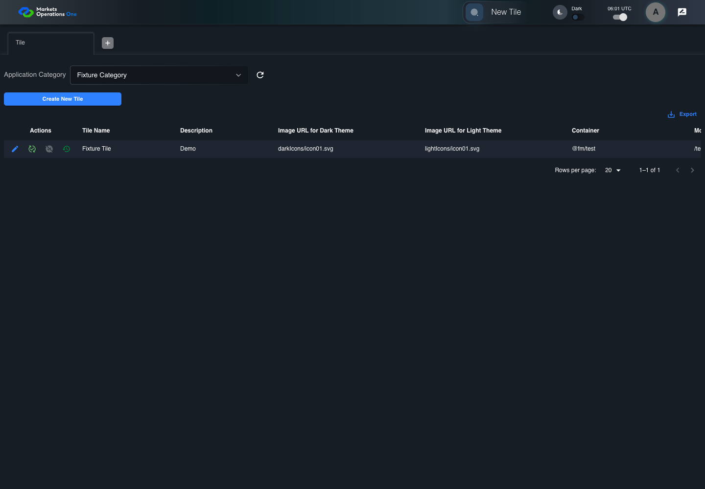

UI-ADM-SEL-013 actual administration UI with step evidence
PASS · application/run-050/ui-adm-sel-013-actual-administration-ui-with-step-evidence-f0dc734cb1ea-attempt-1 · ACTUAL_APPLICATION_LOCAL_SERVICES
Actual current React administration screens. Controlled browser login supplies UI-ADMIN-01 and TEST_OWNER, or the declared SUPER_USER. Controlled BFF routes return the case-declared records. Other controlled saves persist submitted field values. This run establishes frontend handling only. It does not execute BFF validation, storage, audit generation, or authorization.
2026-10-22T06:01:01.532Z to 2026-10-22T06:01:08.248Z
Assertions and result · Artifact manifest · Exact run inputs and source hashes
Result SHA-256:da25d21ffcec0027b31247579615d79e5956b35514d1fd43ab13af160b630edeMachine observations
- ui-origin-admin-requests.json
0af0b563ad32b6a100758f4783c8cb8650b17aebe326cb3b72fb3aa342c13abf
Screenshot capture: CAPTURED. Named frames: 8.
Step screenshot evidence: COMPLETE. 7/7 canonical steps have execution screenshots.
Canonical step timeline
Given Admin A is authenticated as fixture UI-ADMIN-01 with the case-specific permissions
Execution: PASSED.1. step-01 Visible state after step 1: Given Admin A is authenticated as fixture UI-ADMIN-01 with the case-specific permissions
2026-10-22T06:01:03.648Z · 1440×1000
Step: /Users/lushevol/code/github/ratan-release-impact/workbench/tasks/ui-test-coverage-20261022/test-cases.md:9746
SHA-256:9fc2d11cf595e53fa313be1cad75837239b71b55f274004751552113066a140cAnd Tile edit form is open and response preserves Role Entities lines ENTITY_A and ENTITY_B
Execution: PASSED.2. step-02 Visible state after step 2: And Tile edit form is open and response preserves Role Entities lines ENTITY_A and ENTITY_B
2026-10-22T06:01:05.583Z · 1440×1000
Step: /Users/lushevol/code/github/ratan-release-impact/workbench/tasks/ui-test-coverage-20261022/test-cases.md:9747
SHA-256:99a3589984b075b87fa7026ce4fdabbd9ff77d3de621f1ecf6c744e6e33fcfd9When Admin A enters exactly "ENTITY_A\nENTITY_B" into textarea named "Role Entities" inside the dialog named "edit ID: 101" inside the "Tile" administration tabpanel where \n represents one line break
Execution: PASSED.3. step-03 Visible state after step 3: When Admin A enters exactly "ENTITY_A\nENTITY_B" into textarea named "Role Entities" inside the dialog named "edit ID: 101" inside the "Tile" administration tabpanel where \n represents one line break
2026-10-22T06:01:06.018Z · 1440×1000
Step: /Users/lushevol/code/github/ratan-release-impact/workbench/tasks/ui-test-coverage-20261022/test-cases.md:9748
SHA-256:20b010eb5c651f977cdb85532cc81176c5b56bc59a3d89bd43bcdf0bbb0b981bAnd the declared controlled field clock advances by 300 milliseconds
Execution: PASSED.4. step-04 Visible state after step 4: And the declared controlled field clock advances by 300 milliseconds
2026-10-22T06:01:06.402Z · 1440×1000
Step: /Users/lushevol/code/github/ratan-release-impact/workbench/tasks/ui-test-coverage-20261022/test-cases.md:9749
SHA-256:6316353f3e2b085bf17ae06795b62338b34253121ffea55f51a593ad1df693deAnd Admin A clicks button named "Update" inside the dialog named "edit ID: 101" inside the "Tile" administration tabpanel
Execution: PASSED.
5. step-05 Visible state after step 5: And Admin A clicks button named "Update" inside the dialog named "edit ID: 101" inside the "Tile" administration tabpanel
2026-10-22T06:01:06.752Z · 1440×1000
Step: /Users/lushevol/code/github/ratan-release-impact/workbench/tasks/ui-test-coverage-20261022/test-cases.md:9750
SHA-256:0ba2add1e8c1f5050bdb518d57f3ecc960e449198ed4bc628bb744ed99d4aa64And Admin A clicks icon button named "Edit" inside row with Record Id "101" in the "Tile" administration data grid
Execution: PASSED.6. step-06 Visible state after step 6: And Admin A clicks icon button named "Edit" inside row with Record Id "101" in the "Tile" administration data grid
2026-10-22T06:01:07.085Z · 1440×1000
Step: /Users/lushevol/code/github/ratan-release-impact/workbench/tasks/ui-test-coverage-20261022/test-cases.md:9751
SHA-256:eb1cf6ba30bc345a87b9a5a084afcf2a7cfb6c259a0fad8b378898a439495c7eThen textarea named "Role Entities" inside the dialog named "edit ID: 101" inside the "Tile" administration tabpanel has exactly the value "ENTITY_A\nENTITY_B" where \n represents one line break
Execution: PASSED.7. step-07 Visible state after step 7: Then textarea named "Role Entities" inside the dialog named "edit ID: 101" inside the "Tile" administration tabpanel has exactly the value "ENTITY_A\nENTITY_B" where \n represents one line break
2026-10-22T06:01:07.219Z · 1440×1000
Step: /Users/lushevol/code/github/ratan-release-impact/workbench/tasks/ui-test-coverage-20261022/test-cases.md:9752
SHA-256:649b73c7edc3501642f7e2b6ac4789c7b35c4fa49bdcb04bc6843f4cbdd8162f
Additional named frames
Screenshots establish visible state only. Assertions and traces support functional claims.